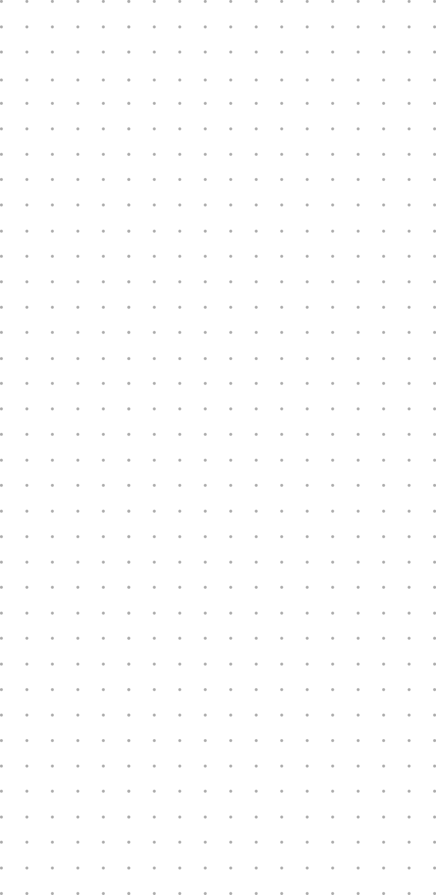
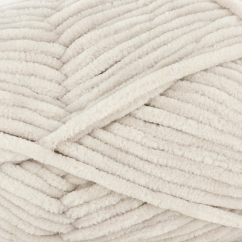

MECHANICS
 A chunky beige sweater with a loose boxy fit.
A chunky beige sweater with a loose boxy fit.

Made using chenille, a type of yarn that has a luminous look and soft feel. It consists of several short fibers tightly twisted together with the fiber’s main string, creating its signature fuzzy look.
Incorporating 3 kinds of stitches: ribbing, cable, and basketweave. Ribbing are several columns of stacked “V” shapes that make textiles stretchy. Cable is an intricate pattern that creates a 3D quality. Basketweave has a more 2D finished look and resembles weaving, hence the name.
 The pattern of the sweater is broken down into 4 parts: front, back and sleeves. The front and sleeve pieces are made up of the basketweave and cable stitches, having the cable being the focal point and the most visible. The shape of the sleeves are different compared to the typical shaped used in sewing. Rather than having a rounded top, catering towards the more specific and tailored fit on shoulders, sleeves for knitted garments are more rectangular, since the fit is meant to be more relaxed.
The pattern of the sweater is broken down into 4 parts: front, back and sleeves. The front and sleeve pieces are made up of the basketweave and cable stitches, having the cable being the focal point and the most visible. The shape of the sleeves are different compared to the typical shaped used in sewing. Rather than having a rounded top, catering towards the more specific and tailored fit on shoulders, sleeves for knitted garments are more rectangular, since the fit is meant to be more relaxed.